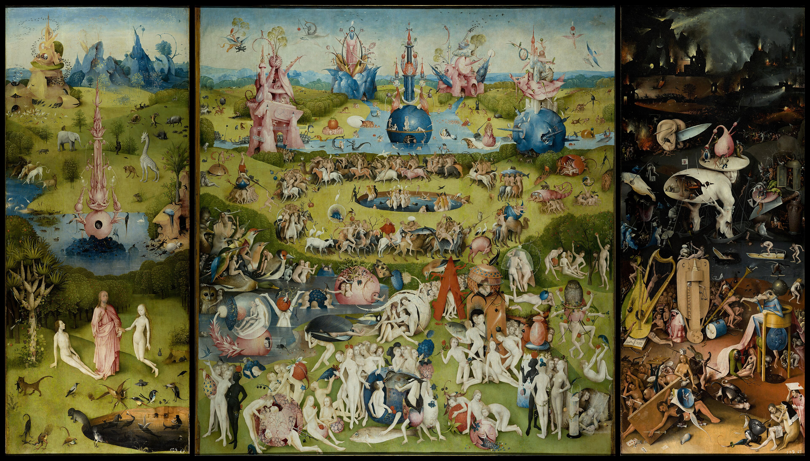

左翼是伊甸园，中间是欲望的世界，右翼把狂欢折叠成地狱。低地平线托起远处粉蓝建筑，前景的微小人物则像一整个生态系统。
淡青、湖蓝、玫粉与草绿占场；赭红、肉色和深褐做标点。冷色的高明度像糖衣，暖色的互补张力把情绪拉近。
橡木板油画以极细笔触描出羽毛、鳞片、果实表皮与透明水体。每个怪物都像拥有自己的物理世界，荒诞因此变得可信。
博斯来自荷兰斯海尔托亨博斯，在家族画坊与宗教图像传统中工作，却把道德寓言画成近乎科幻的生物设计。它最动人之处，是让着迷与怀疑同时存在。
出处：Museo Nacional del Prado；图像：Wikimedia Commons 高分辨率文件。原作已属公版；数字图像复制条件因来源页与地区而异。版权归原作者及相关图像权利人，请核对来源页。赏析为每日艺术原创。